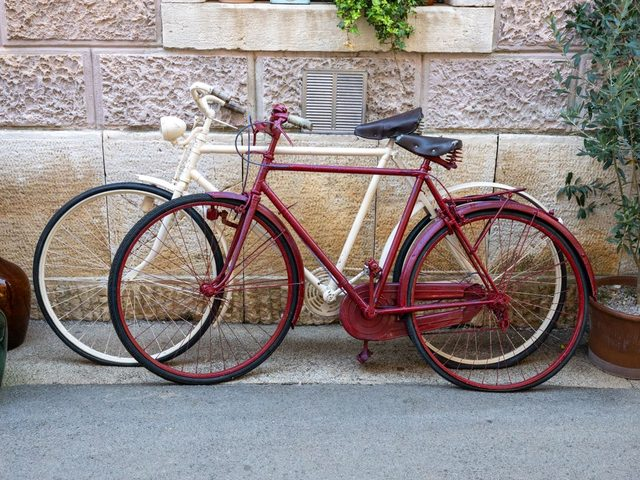
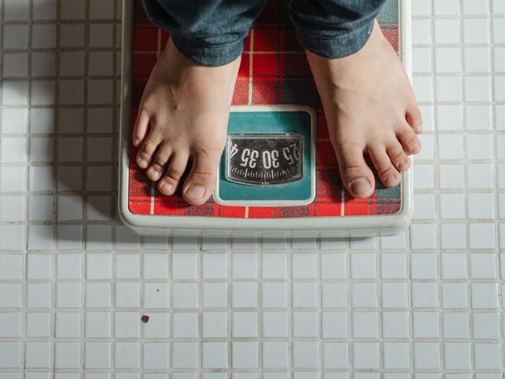
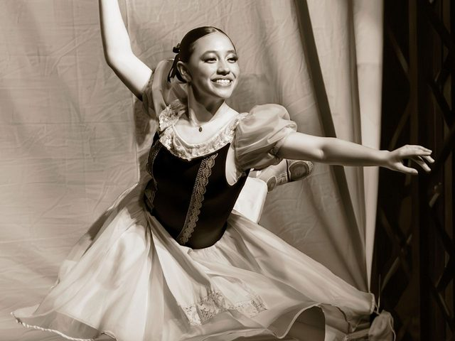
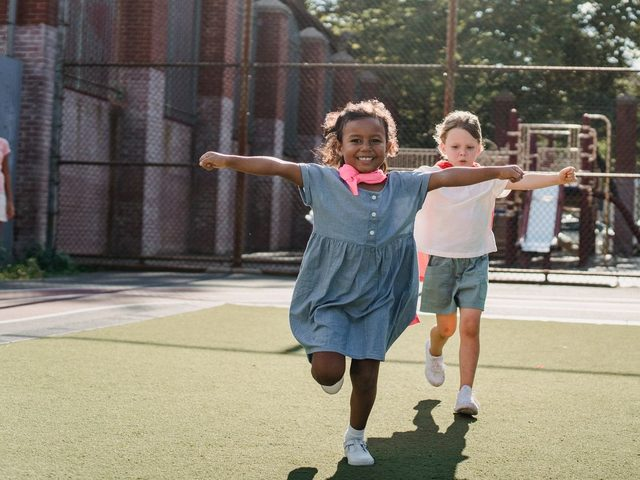
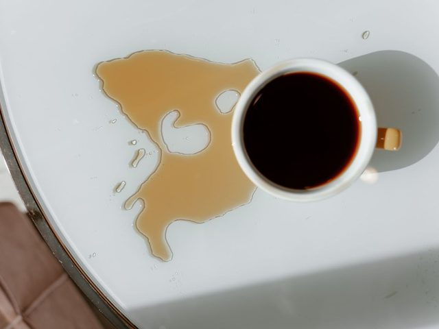
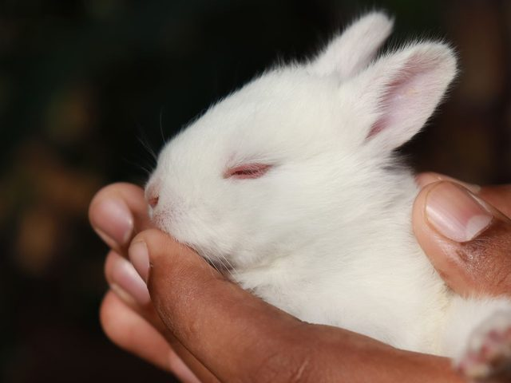
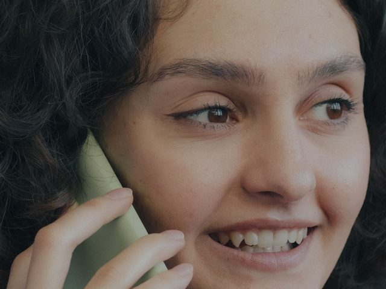

UNIT 2 · VOCABULARY
個人特徵
Personal characteristics
41 個單字聽・唸・用
本單元單字一覽
進階的形容詞，共 41 個：先是外表（胖瘦、聾啞），再來是個性（聰明、慷慨、自私、害羞……）。注意 dis-／im- 開頭的反義字，和 childish／childlike 的差別。
chubbydeafdumbnice-lookingoverweightskinnyslenderunderweightactivecarelesschildishchildlikecleverconfidentconsideratecruelcuriousdiligentdishonestevilenergeticfoolishfrankgentlegenerousgreedyhumblehumorousimpoliteintelligentjealousnaughtynervouspatientrudeselfishsillysinceresneakystingytalkative
每個字都有 🔊，先聽發音、跟著唸，再看例句。
單字 1–4

chubby
圓胖的；豐滿的adj.
The baby has chubby cheeks.
那個寶寶的臉頰圓嘟嘟的。
那個寶寶的臉頰圓嘟嘟的。
🦻
deaf
聾的；耳聾的adj.
My grandpa is a little deaf, so please speak loudly.
我爺爺有點重聽，請大聲說話。
我爺爺有點重聽，請大聲說話。

dumb
啞的；不能說話的adj.
The boy was born dumb, so he talks in sign language.
那個男孩天生不能說話，所以用手語溝通。
那個男孩天生不能說話，所以用手語溝通。

nice-looking
好看的；漂亮的adj.
Your new bike is really nice-looking.
你的新腳踏車真好看。
你的新腳踏車真好看。
單字 5–8

overweight
過重的adj.
The doctor said my uncle was overweight and needed exercise.
醫生說我叔叔過重，需要運動。
醫生說我叔叔過重，需要運動。

skinny
皮包骨的；極瘦的adj.
The skinny cat ate all the fish in a minute.
那隻很瘦的貓一分鐘就把魚吃光了。
那隻很瘦的貓一分鐘就把魚吃光了。

slender
苗條的；纖細的adj.
The dancer is tall and slender.
那位舞者又高又苗條。
那位舞者又高又苗條。

underweight
體重太輕的adj.
The puppy was underweight, so we gave it more food.
那隻小狗太輕了，所以我們多餵牠一些。
那隻小狗太輕了，所以我們多餵牠一些。
單字 9–12

active
活躍的；活潑的adj.
My brother is active in the school band.
我哥哥在學校樂隊很活躍。
我哥哥在學校樂隊很活躍。

careless
粗心的；草率的adj.
I made a careless mistake on the math test.
我數學考試犯了一個粗心的錯。
我數學考試犯了一個粗心的錯。
childish
幼稚的；孩子氣的adj.
Stop fighting over the toy. Don't be so childish!
別再搶玩具了，不要那麼幼稚！
別再搶玩具了，不要那麼幼稚！

childlike
天真的；純真的adj.
The old painter still has a childlike love of colors.
那位老畫家仍然像孩子一樣熱愛色彩。
那位老畫家仍然像孩子一樣熱愛色彩。
單字 13–16
clever
聰明的；靈巧的adj.
The clever fox found a way to get the grapes.
聰明的狐狸想到辦法拿到葡萄。
聰明的狐狸想到辦法拿到葡萄。

confident
有自信的；確信的adj.
She practiced a lot, so she felt confident about the speech.
她練習了很多次，所以對演講很有信心。
她練習了很多次，所以對演講很有信心。

considerate
體貼的；考慮周到的adj.
It's considerate of you to bring me an umbrella.
你帶傘給我，真是體貼。
你帶傘給我，真是體貼。

cruel
殘忍的；殘酷的adj.
It is cruel to keep a big dog in a small cage.
把大狗關在小籠子裡很殘忍。
把大狗關在小籠子裡很殘忍。
單字 17–20

curious
好奇的adj.
The curious kitten looked into every box.
好奇的小貓每個箱子都探頭看。
好奇的小貓每個箱子都探頭看。

diligent
勤勉的；勤奮的adj.
Amy is diligent. She reviews her notes every night.
Amy 很勤奮，每天晚上都複習筆記。
Amy 很勤奮，每天晚上都複習筆記。
🤥
dishonest
不誠實的adj.
The dishonest man lied about the price.
那個不誠實的人在價錢上說謊。
那個不誠實的人在價錢上說謊。
evil
邪惡的；壞的adj.
In the movie, the evil queen wanted to rule the world.
電影裡，邪惡的皇后想統治世界。
電影裡，邪惡的皇后想統治世界。
單字 21–24

energetic
精力旺盛的；精神飽滿的adj.
The energetic kids played soccer all afternoon.
那些精力旺盛的孩子踢了一整個下午的足球。
那些精力旺盛的孩子踢了一整個下午的足球。

foolish
愚蠢的；傻的adj.
It was foolish of me to leave my bag on the bus.
我把包包留在公車上，真是太傻了。
我把包包留在公車上，真是太傻了。

frank
坦白的；直率的adj.
To be frank, I don't like this song.
坦白說，我不喜歡這首歌。
坦白說，我不喜歡這首歌。

gentle
溫和的；溫柔的adj.
Be gentle with the baby rabbit.
對小兔子要溫柔一點。
對小兔子要溫柔一點。
單字 25–28

generous
慷慨的；大方的adj.
My generous uncle gave each of us a red envelope.
我慷慨的叔叔給我們每人一個紅包。
我慷慨的叔叔給我們每人一個紅包。

greedy
貪心的；貪吃的adj.
The greedy boy took all the candy for himself.
那個貪心的男孩把糖果全拿走了。
那個貪心的男孩把糖果全拿走了。
🙇
humble
謙虛的；簡陋的adj.
The famous singer is still humble and kind.
那位有名的歌手仍然謙虛又親切。
那位有名的歌手仍然謙虛又親切。

humorous
幽默的；滑稽的adj.
Our humorous teacher makes every class fun.
我們幽默的老師讓每堂課都很有趣。
我們幽默的老師讓每堂課都很有趣。
單字 29–32
🙊
impolite
不禮貌的adj.
It's impolite to talk with your mouth full.
嘴裡塞滿食物還講話很不禮貌。
嘴裡塞滿食物還講話很不禮貌。

intelligent
聰明的；有才智的adj.
Dolphins are very intelligent animals.
海豚是非常聰明的動物。
海豚是非常聰明的動物。

jealous
嫉妒的adj.
Tom was jealous of his brother's new phone.
Tom 嫉妒他哥哥的新手機。
Tom 嫉妒他哥哥的新手機。

naughty
頑皮的；淘氣的adj.
The naughty puppy chewed my shoes.
那隻頑皮的小狗咬了我的鞋子。
那隻頑皮的小狗咬了我的鞋子。
單字 33–36
nervous
緊張的；不安的adj.
I always feel nervous before a test.
我考試前總是很緊張。
我考試前總是很緊張。
⏳
patient
有耐心的；（名詞）病人adj.
Please be patient. The bus will come soon.
請耐心一點，公車快來了。
請耐心一點，公車快來了。

rude
無禮的；粗魯的adj.
It's rude to point at people.
用手指著別人很沒禮貌。
用手指著別人很沒禮貌。
🙅
selfish
自私的adj.
Don't be selfish. Share your snacks with your sister.
不要自私，跟妹妹分享零食。
不要自私，跟妹妹分享零食。
單字 37–40

silly
愚蠢的；糊塗的adj.
I made a silly face, and everyone laughed.
我扮了個鬼臉，大家都笑了。
我扮了個鬼臉，大家都笑了。

sincere
真誠的；衷心的adj.
Thank you for your sincere help.
謝謝你真誠的幫忙。
謝謝你真誠的幫忙。

sneaky
鬼鬼祟祟的；偷偷摸摸的adj.
The sneaky cat took the fish when no one was looking.
那隻鬼鬼祟祟的貓趁沒人注意偷走了魚。
那隻鬼鬼祟祟的貓趁沒人注意偷走了魚。
stingy
吝嗇的；小氣的adj.
He is so stingy that he never buys anyone a drink.
他小氣到從來不請別人喝飲料。
他小氣到從來不請別人喝飲料。
單字 41–41

talkative
多話的；愛說話的adj.
My talkative friend can chat for hours on the phone.
我那個愛講話的朋友可以講好幾個小時的電話。
我那個愛講話的朋友可以講好幾個小時的電話。
加字首變反義字
| 原本 | 反義 |
|---|---|
| honest 誠實的 | dishonest 不誠實的 |
| polite 有禮貌的 | impolite 不禮貌的 |
| patient 有耐心的 | impatient 沒耐心的 |
| careful 小心的 | careless 粗心的 |
dis-、im-、un- 放在前面表示「不」；-less 放在後面表示「沒有」。
容易混淆的字
| 字 | 意思 |
|---|---|
| childish | 幼稚的（壞的意思） |
| childlike | 天真的（好的意思） |
| skinny | 極瘦的（不好看） |
| slender | 苗條的（稱讚） |
-ish 常帶不好的意思（childish、selfish、foolish）；-like 是「像…一樣」。
意思相反的一對
| 正面 | 反面 |
|---|---|
| generous 慷慨的 | stingy 吝嗇的 |
| overweight 過重的 | underweight 過輕的 |
| humble 謙虛的 | proud 驕傲的 |
| diligent 勤奮的 | lazy 懶惰的 |
快問快答：中文 → 英文
1圓胖的；豐滿的chubby
2啞的；不能說話的dumb
3過重的overweight
4苗條的；纖細的slender
5活躍的；活潑的active
6幼稚的；孩子氣的childish
7聰明的；靈巧的clever
8體貼的；考慮周到的considerate
快問快答：英文 → 中文
1curious好奇的
2dishonest不誠實的
3energetic精力旺盛的；精神飽滿的
4frank坦白的；直率的
5generous慷慨的；大方的
6humble謙虛的；簡陋的
7impolite不禮貌的
8jealous嫉妒的
學完了！接下來
複習方法
review
- 回到「📗 單字卡」，按「遮中文」自己考自己
- 再按「遮英文」，看中文說出英文
- 每個例句跟著 🔊 唸一次
準備好了
- 按右上角「📝 前往測驗」
- 測驗錯的題目要訂正到全對
- 訂正完成補送 1 點